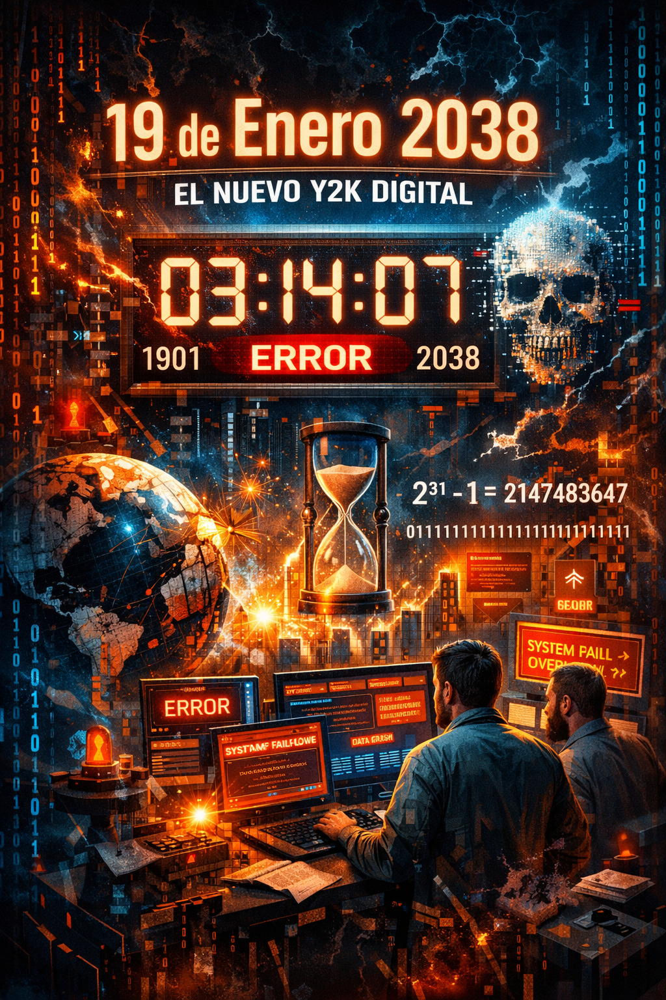

El 19 de enero de 2038, el mundo digital podría enfrentarse a un reto similar al Y2K, pero con un origen matemático más profundo.
¿Por qué sucede?
El problema radica en la forma en que los sistemas de 32 bits cuentan el tiempo. Utilizan un número entero para contar los segundos transcurridos desde el 1 de enero de 1970...
"Es un recordatorio de que las limitaciones del pasado siempre regresan para ponernos a prueba."
A medida que nos acercamos a la fecha, la migración a sistemas de 64 bits se vuelve crítica para infraestructuras globales.